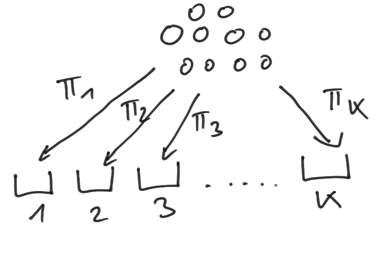
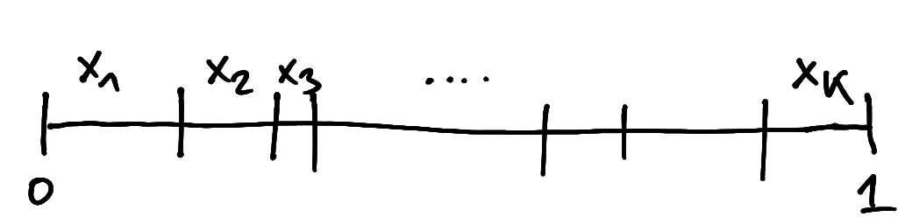

5 Multivariate distributions
5.1 Categorical distribution
The categorical distribution is a generalisation of the Bernoulli distribution from two classes to \(K\) classes.
The categorical distribution \(\text{Cat}(\symbfit \pi)\) describes a discrete random variable with \(K\) states (“categories”, “classes”, “bins”) where the parameter vector \(\symbfit \pi= (\pi_1, \ldots, \pi_K)^T\) specifies the probability of each of class so that \(\text{Pr}(\text{"class k"}) = \pi_k\). The parameters satisfy \(\pi_k \in [0,1]\) and \(\sum_{k=1}^K \pi_k = 1\), hence there are \(K-1\) independent parameters in a categorical distribution (and not \(K\)).
There are two main ways to numerically represent “class k”:
- by “integer encoding”, i.e. by the corresponding integer \(k\).
- by “one hot encoding”, i.e. by an indicator vector \(\symbfit x= (x_1, \ldots, x_K)^T = (0, 0, \ldots, 1, \ldots, 0)^T\) containing zeros everywhere except for the element \(x_k=1\) at position \(k\). Thus all \(x_k \in \{ 0, 1\}\) and \(\sum_{k=1}^K x_k = 1\).
In the following we use “one hot encoding”. Therefore sampling from a categorical distribution with parameters \(\symbfit \pi\) \[ \symbfit x\sim \text{Cat}(\symbfit \pi) \] yields a random index vector \(\symbfit x\).
The corresponding probability mass function (PMF) can be written conveniently in terms of \(x_k\) as \[ p(\symbfit x| \symbfit \pi) = \prod_{k=1}^K \pi_k^{x_k} = \begin{cases} \pi_k & \text{if } x_k = 1 \\ \end{cases} \] and the log PMF as \[ \log p(\symbfit x| \symbfit \pi) = \sum_{k=1}^K x_k \log \pi_k = \begin{cases} \log \pi_k & \text{if } x_k = 1 \\ \end{cases} \]
In order to be more explicit that the categorical distribution has \(K-1\) and not \(K\) parameters we rewrite the log-density with \(\pi_K = 1 - \sum_{k=1}^{K-1} \pi_k\) and \(x_K = 1 - \sum_{k=1}^{K-1} x_k\) as \[ \begin{split} \log p(\symbfit x| \symbfit \pi) & =\sum_{k=1}^{K-1} x_k \log \pi_k + x_K \log \pi_K \\ & =\sum_{k=1}^{K-1} x_k \log \pi_k + \left( 1 - \sum_{k=1}^{K-1} x_k \right) \log \left( 1 - \sum_{k=1}^{K-1} \pi_k \right) \\ \end{split} \] Note that there is no particular reason to choose \(\pi_K\) as dependent of the probabilities of the other classes, in its place any other of the \(\pi_k\) may be selected.
The expected value is \(\text{E}(\symbfit x) = \symbfit \pi\), in component notation \(\text{E}(x_k) = \pi_k\). The covariance matrix is \(\text{Var}(\symbfit x) = \text{Diag}(\symbfit \pi) - \symbfit \pi\symbfit \pi^T\), which in component notation is \(\text{Var}(x_i) = \pi_i (1-\pi_i)\) and \(\text{Cov}(x_i, x_j) = -\pi_i \pi_j\).
The form of the categorical covariance matrix follows directly from the definition of the variance \(\text{Var}(\symbfit x) = \text{E}( \symbfit x\symbfit x^T) - \text{E}( \symbfit x) \text{E}( \symbfit x)^T\) and noting that \(x_i^2 = x_i\) and \(x_i x_j = 0\) if \(i \neq j\). Furthermore, the categorical covariance matrix is singular by construction, as the \(K\) random variables \(x_1, \ldots, x_K\) are dependent through the constraint \(\sum_{k=1}^K x_k = 1\).
For \(K=2\) the categorical distribution reduces to the Bernoulli \(\text{Ber}(\theta)\) distribution, with \(\pi_1=\theta\) and \(\pi_2=1-\theta\).
5.2 Multinomial distribution
The multinomial distribution \(\text{Mult}(n, \symbfit \pi)\) arises from repeated categorical sampling, in the same fashion as the binomial distribution arises from repeated Bernoulli sampling. Thus, if \(\symbfit x_1, \ldots, \symbfit x_n\) are \(n\) independent \(\text{Cat}(\symbfit \pi)\) random categorical variables then \(\symbfit y= \sum_{i=1}^n \symbfit x_i\) is distributed as \(\text{Mult}(n, \symbfit \pi)\).
The corresponding PMF describes the probability of a pattern \(y_1, \ldots, y_K\) of samples distributed across \(K\) classes (with \(n= \sum_{k=1}^K y_k\)): \[ p(\symbfit y| n, \theta) = \binom{n}{y_1, \ldots, y_n} \prod_{k=1}^K \pi_k^{y_k} \] where \(\binom{n}{y_1, \ldots, y_n}\) is the multinomial coefficient.
The expected value is \[\text{E}(\symbfit y) = n \symbfit \pi\] which in component notation is \(\text{E}(y_k) = n \pi_k\). The covariance matrix is \[\text{Var}(\symbfit y) = n (\text{Diag}(\symbfit \pi) - \symbfit \pi\symbfit \pi^T) \] which in component notation is \(\text{Var}(x_i) = n \pi_i (1-\pi_i)\) and \(\text{Cov}(x_i, x_j) = -n \pi_i \pi_j\).
Standardised to unit interval we get: \[\frac{y_i}{n} \in \left\{0,\frac{1}{n},\frac{2}{n},...,1\right\}\] \[\text{E}\left(\frac{\symbfit y}{n}\right) = \symbfit \pi\] \[\text{Var}\left(\frac{\symbfit y}{n}\right) = \frac{ \text{Diag}(\symbfit \pi)-\symbfit \pi\symbfit \pi^T}{n}\] \[\text{Var}\left(\frac{y_i}{n}\right)=\frac{\pi_i(1-\pi_i)}{n}\] \[\text{Cov}\left(\frac{y_i}{n},\frac{y_j}{n}\right)=-\frac{\pi_i\pi_j}{n} \]
The multinomial distribution may be illustrated by an urn model distributing \(n\) balls into \(K\) bins:
For \(n=1\) the multinomial distribution reduces to the categorical distribution.
For \(K=2\) the multinomial distribution reduces to the Binomial distribution.
5.3 Dirichlet distribution
5.3.1 Standard parameterisation
The Dirichlet distribution is the multivariate generalisation of the beta distribution.
A Dirichlet distributed random vector is denoted by \[ \symbfit x\sim \text{Dir}(\symbfit \alpha) \] with parameter \(\symbfit \alpha= (\alpha_1,...,\alpha_K)^T >0\) and \(K\geq 2\) and where the support of \(\symbfit x\) is the \(K-1\) dimensional simplex with \(x_i \in [0,1]\) and \(\sum^{K}_{i=1} x_i = 1\).
The Dirichlet random variable can be visualised as breaking a unit stick of length one in \(K\) pieces of length \(x_1\) to \(x_K\):

The density of the Dirichlet distribution \(\text{Dir}(\symbfit \alpha)\) is \[ p(\symbfit x| \symbfit \alpha) = \frac{1}{B(\symbfit \alpha)} \prod_{k=1}^K x_k^{\alpha_k-1} \] This depends on the beta function with multivariate argument defined as \[ B(\symbfit z) = \frac{ \prod_{k=1}^K \Gamma(z_k) }{\Gamma\left( \sum_{k=1}^K z_k\right)} \]
For \(K=2\) the Dirichlet distribution reduces to the beta distribution.
5.3.2 Mean parameterisation
Instead of employing \(\symbfit \alpha\) as parameter vector another useful reparameterisation \(\text{Dir}(\symbfit \pi, k)\) of the Dirichlet distribution is in terms of a mean parameter \(\symbfit \pi\), with \(\pi_i \in [0,1]\) and \(\sum^{K}_{i=1}\pi_i = 1\), and a concentration parameter \(k > 0\). These are given by \[ k = \sum^{K}_{i=1}\alpha_i \] and \[ \symbfit \pi= \frac{\symbfit \alpha}{k} \] The original parameters can be recovered by \(\alpha= \symbfit \pi k\).
The mean and variance of the Dirichlet distribution expressed in terms of \(\symbfit \pi\) and \(k\) are \[ \text{E}(\symbfit x) = \symbfit \pi \] and \[\text{Var}\left(\symbfit x\right) = \frac{ \text{Diag}(\symbfit \pi)-\symbfit \pi\symbfit \pi^T}{k+1}\] which in component notation is \[\text{Var}(x_i)=\frac{\pi_i(1-\pi_i)}{k+1}\] and \[\text{Cov}(x_i,x_j)=-\frac{\pi_i \pi_j}{k+1}\]
Finally, note that the mean and variance of the continuous Dirichlet distribution closely match those of the unit-standardised discrete multinomial distribution above.
5.4 Multivariate normal distribution
The univariate normal distribution for a random scalar \(x\) generalises to the multivariate normal distribution for a random vector \(\symbfit x= (x_1, x_2,...,x_d)^T\).
If \(\symbfit x\) follows a multivariate normal distribution we write \[ \symbfit x\sim N_d(\symbfit \mu, \symbfit \Sigma) \] where \(\symbfit \mu\) is the mean (location) parameter and \(\symbfit \Sigma\) the variance (scale) parameter.
The corresponding density is
\[ p(\symbfit x| \symbfit \mu, \symbfit \Sigma) = \det(2 \pi \symbfit \Sigma)^{-1/2} \exp\left(-\frac{1}{2} (\symbfit x-\symbfit \mu)^T \symbfit \Sigma^{-1} (\symbfit x-\symbfit \mu) \right) \]
As \(\det(2 \pi \symbfit \Sigma)^{-1/2} = \det(2 \pi \symbfit I_d)^{-1/2} \det(\symbfit \Sigma)^{-1/2} = (2 \pi)^{-d/2} \det(\symbfit \Sigma)^{-1/2}\) the density can also be written as \[ p(\symbfit x| \symbfit \mu, \symbfit \Sigma) = (2\pi)^{-d/2} \det(\symbfit \Sigma)^{-1/2} \exp\left(-\frac{1}{2} (\symbfit x-\symbfit \mu)^T \symbfit \Sigma^{-1} (\symbfit x-\symbfit \mu) \right) \] i.e. with explicit occurence of the dimension \(d\).
The expectation of \(\symbfit x\) is \(\text{E}(\symbfit x) = \symbfit \mu\) and the variance is \(\text{Var}(\symbfit x) = \symbfit \Sigma\).
For \(d=1\) the random vector \(\symbfit x=x\) is a scalar and \(\symbfit \mu= \mu\) and \(\symbfit \Sigma= \sigma^2\) and the multivariate normal density reduces to the univariate normal density.
5.5 Wishart distribution
The Wishart distribution is a multivariate generalisation of the gamma distribution.
Recall that the gamma distribution can be motivated as the distribution of sums of squared normal random variables. Likewise, the Wishart distribution can be understood as the sum of squared multivariate normal variables: \[
\symbfit z_1,\symbfit z_2,\ldots,\symbfit z_k \stackrel{\text{iid}}\sim N_d(0,\symbfit S)
\]
with \(\symbfit S=(s_{ij})\) the specified covariance matrix. The random variable \[\underbrace{\symbfit X}_{d\times d}=\sum^{k}_{i=1}\underbrace{\symbfit z_i\symbfit z_i^T}_{d\times d}\]
is a random matrix and is distributed as \[
\symbfit X\sim \text{W}_d\left(\symbfit S, k\right)
\] with mean \[
\text{E}(\symbfit X) = k \symbfit S
\] and variances \[
\text{Var}(x_{ij}) = k \left(s^2_{ij}+s_{ii} s_{jj} \right)
\]
We often also employ the Wishart distribution in mean parameterisation \[ \text{W}_d\left(\symbfit S= \frac{\symbfit M}{k}, k \right) \] with parameters \(\symbfit M= k \symbfit S\) and \(k\). In this parameterisation the mean is \[ \text{E}(\symbfit X) = \symbfit M= (\mu_{ij}) \] and variances are \[ \text{Var}(x_{ij}) = \frac{ \mu^2_{ij}+\mu_{ii}\mu_{jj} }{k} \]
If \(\symbfit S\) or \(\symbfit M\) is a scalar rather than a matrix then the multivariate Wishart distribution reduces to the univariate Wishart aka gamma distribution.
5.6 Inverse Wishart distribution
The inverse Wishart distribution is a multivariate generalisation of the inverse gamma distribution and is linked to the Wishart distribution.
A random matrix \(\symbfit X\) following an inverse Wishart distribution is denoted by \[ \symbfit X\sim \text{W}^{-1}_d\left(\symbfit \Psi, \nu\right) \] where \(\symbfit \Psi\) is the scale parameter and \(\nu\) the shape parameter. The corresponding mean is given by \[ \text{E}(\symbfit X) = \frac{\symbfit \Psi}{\nu-d-1} \] and the variances are \[ \text{Var}(x_{ij})= \frac{(\nu-d+1) \psi_{ij}^2 + (\nu-d-1) \, \psi_{ii} \psi_{jj} }{(\nu-d)(\nu-d-1)^2(\nu-d-3)} \]
The inverse of \(\symbfit X\) is then Wishart distributed: \[ \symbfit X^{-1} \sim \text{W}_d\left( \symbfit S= \symbfit \Psi^{-1} \, , k = \nu \right) \]
Instead of \(\symbfit \Psi\) and \(\nu\) we may use the mean parameterisation with parameters \(\kappa = \nu-d-1\) and \(\symbfit M= \symbfit \Psi/(\nu-d-1)\): \[ \symbfit X\sim \text{W}^{-1}_d\left(\symbfit \Psi= \kappa \symbfit M\, , \, \nu= \kappa+d+1\right) \] with mean \[ \text{E}(\symbfit X) =\symbfit M \] and variances \[ \text{Var}(x_{ij})= \frac{(\kappa+2) \mu_{ij}^2 + \kappa \, \mu_{ii} \mu_{jj} }{(\kappa + 1)(\kappa-2)} \]
If \(\symbfit \Psi\) or \(\symbfit M\) is a scalar rather than a matrix then the multivariate inverse Wishart distribution reduces to the univariate inverse Wishart aka inverse gamma distribution.